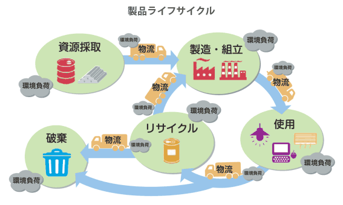

LCA.
e-learning
ライフサイクルとは
ライフサイクルという概念が、特に環境アセスメント（環境影響評価）の分野でよく使われています。
これは、ある製品の製品のゆりかご（原材料生産時の資源・エネルギー消費など）から墓場（最終的に廃棄処理されるときの環境負荷）までの
「一生涯（ライフサイクル）」において,環境に及ぼす影響をすべて考慮して、総合的見地から環境負荷の軽減を進めていくことを目的としています。
例えば、ある自動車が環境に与える影響を評価する際に、走行中の排ガスによる影響だけで評価するのではなく、製造時や廃棄時に環境に与える影響をも含めるという考え方です。
家電製品等の利用による二酸化炭素排出量について考えるときも、使用時の電力消費による排出量だけを加算する場合と、製造時や廃棄時に必要となる電力等も考慮した場合でとは
かなり違った結果を得ることになります。
「環境にやさしい」と言われる電気自動車について考えてみましょう。
走行中にはガソリンなどの燃料を燃焼させることがないので、排ガスの出ないクリーンな自動車と言えます。しかし、電気自動車の走行にはバッテリーなどに充電しておくことが
必要となります。このときの電気がどうやってつくられているかをきちんと評価しないと、本当にクリーンとはいえないかもしれません。
